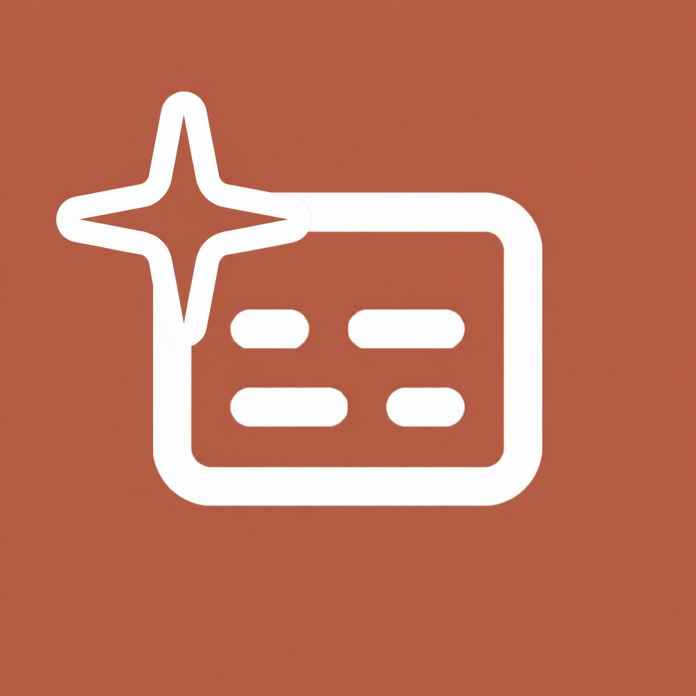

Captionin
Buku Panduan Penggunaan
Asisten Caption UMKM Pasar Kaligawe
Isi → Pilih → Cetak → Tempel.
Pasar Kaligawe · 2026 · Tanpa login · 10x/menit
1Daftar Isi
1 · Apa itu Captionin?
Captionin adalah asisten gratis yang mengubah deskripsi singkat produk menjadi 3 caption jualan siap-tempel untuk Instagram, WhatsApp, TikTok, dan Facebook — dalam ±30 detik, tanpa login.
Contoh sederhana: tulis "Keripik singkong 500gr renyah 15rb" → keluar 3 caption beda gaya (manfaat / cerita / urgensi) lengkap dengan hashtag. Tinggal salin, tempel, jualan.
2 · Kenapa Penting bagi UMKM?
- a. Tidak bingung kata-kata tiap hari — foto ada, caption langsung jadi.
- b. Satu produk bisa tayang di 4 platform dengan format yang benar (IG hashtag, WA *bold*, TikTok #FYP).
- c. Hemat waktu: 30 detik vs 30 menit mikir caption.
- d. Gratis, tanpa login — bisa dipakai rame-rame di pasar.
3 · Komponen Caption yang Bagus
| Komponen | Contoh | Sifat |
|---|---|---|
| Nama produk | Keripik Singkong Original | 2–60 huruf, wajib |
| Deskripsi singkat | 500gr, renyah, tanpa pengawet, 15rb | 20–500 huruf, wajib — makin spesifik makin tajam |
| Keunggulan | tanpa pengawet, 500gr | Opsional ≤200 huruf, masuk ke 3 varian |
| Platform + nada | Instagram + Ceria | Menentukan format & gaya bahasa |
4 · Rumus Caption Bagus
5 · Contoh Nyata
Input (diketik pedagang):
Output (3 varian otomatis):
6 · Cara Mengakses
- 1. Buka browser di HP (Chrome/Safari).
- 2. Ketik atau scan QR di hal 10:
captionin.vercel.app/#buat-caption - 3. Halaman utama langsung terbuka — geser ke bagian "Buat caption", siap dipakai.
7 · Mengenal Tampilan
Ganti kotak di bawah dengan screenshot web asli + panah bernomor saat cetak final.
| 1–3 | Formulir isian (pola sama: ketik → counter huruf jalan otomatis) |
| 4 | Pilihan — hasil menyesuaikan format platform & nada |
| 5–6 | Tombol aksi + hasil (otomatis muncul seperti struk, bisa tab "Lihat di HP") |
8 · Cara Mengisi + Langkah Pakai
Aturan tiap field
| Field | Benar ✅ | Gagal ❌ |
|---|---|---|
| Nama | ≥2 huruf | "A" — border merah |
| Deskripsi | ≥20 huruf, spesifik | "Enak" — submit batal |
| Keunggulan | ≤200 huruf | 200+ — ditolak |
Langkah 1–3 (30 detik)
- Langkah 1 — Isi nama + deskripsi + keunggulan.
- Langkah 2 — Pilih platform & nada.
- Langkah 3 — Klik Cetak → 3 struk muncul → Salin → tempel ke sosmed. Riwayat 5 terbaru tersimpan otomatis.
9 · Jika Gagal + FAQ
⚠️ Jika gagal
- Border merah → perbaiki field.
- "Terlalu sering" → tunggu 1 menit (10x/menit).
- Tidak ada struk → cek internet, coba lagi.
Kode error
Sering ditanya
- Gratis? Ya, untuk pedagang Kaligawe.
- Perlu login? Tidak.
- Hasil bisa diedit? Bisa — salin lalu ubah sebelum posting.
Coba Sekarang
Deskripsi singkat → 3 varian caption.
Salin, tempel, jualan.
captionin.vercel.app/#buat-caption
GRATIS · TANPA LOGIN · 10x/menit
"Caption-nya langsung laris di WA!" — Bu Siti ⭐⭐⭐⭐⭐
© KKM Kaligawe · Captionin — Asisten Caption UMKM · 2026
10